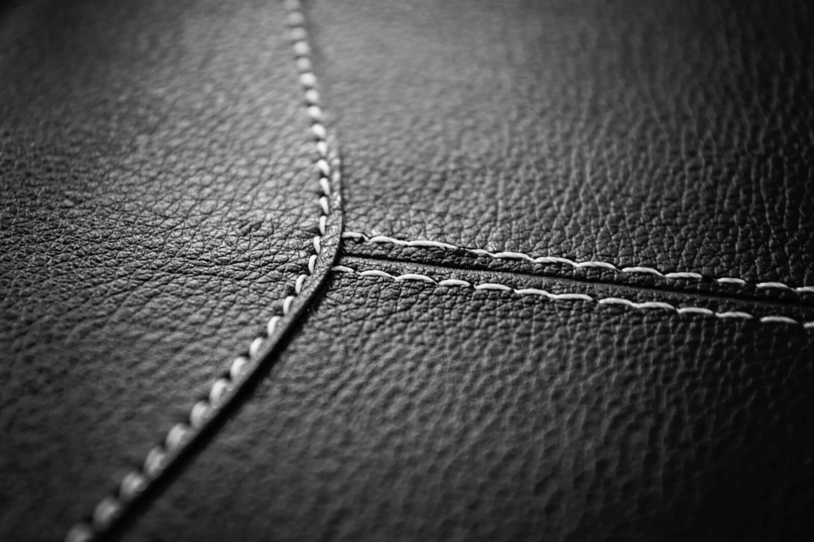
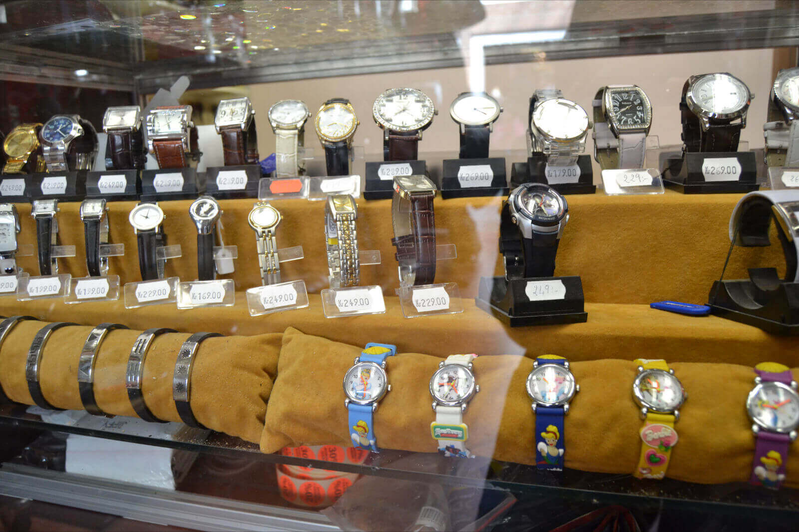
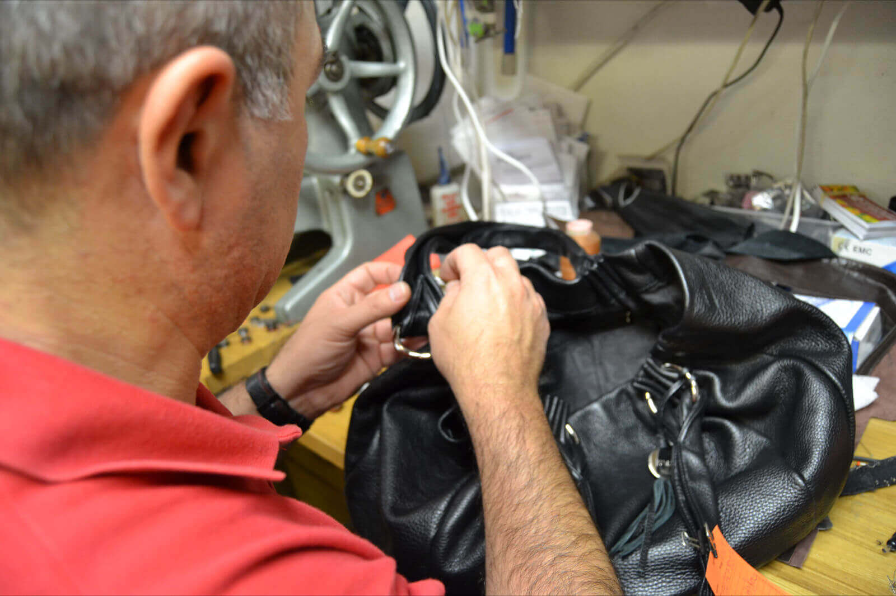
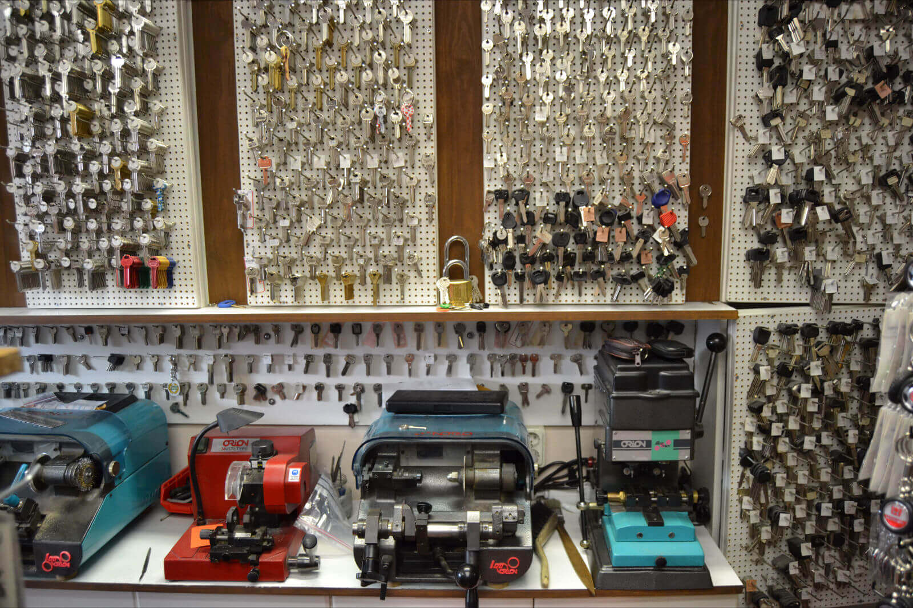
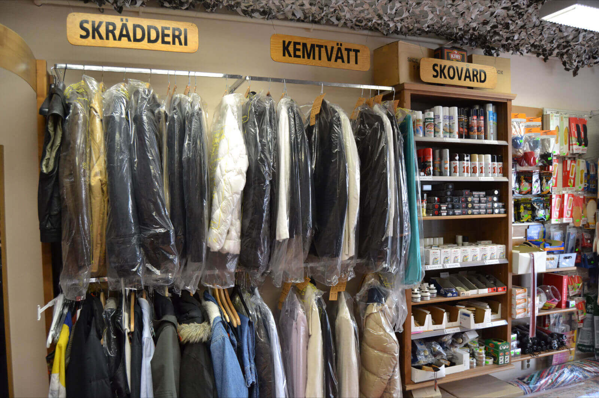
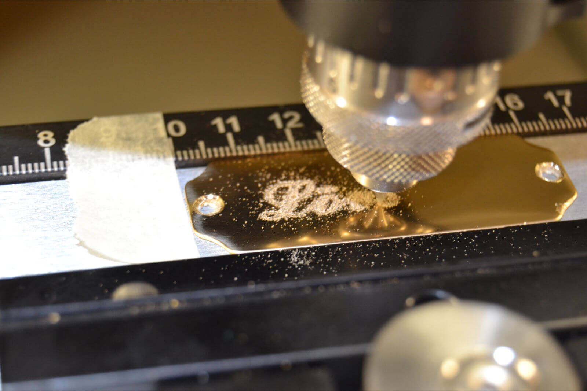
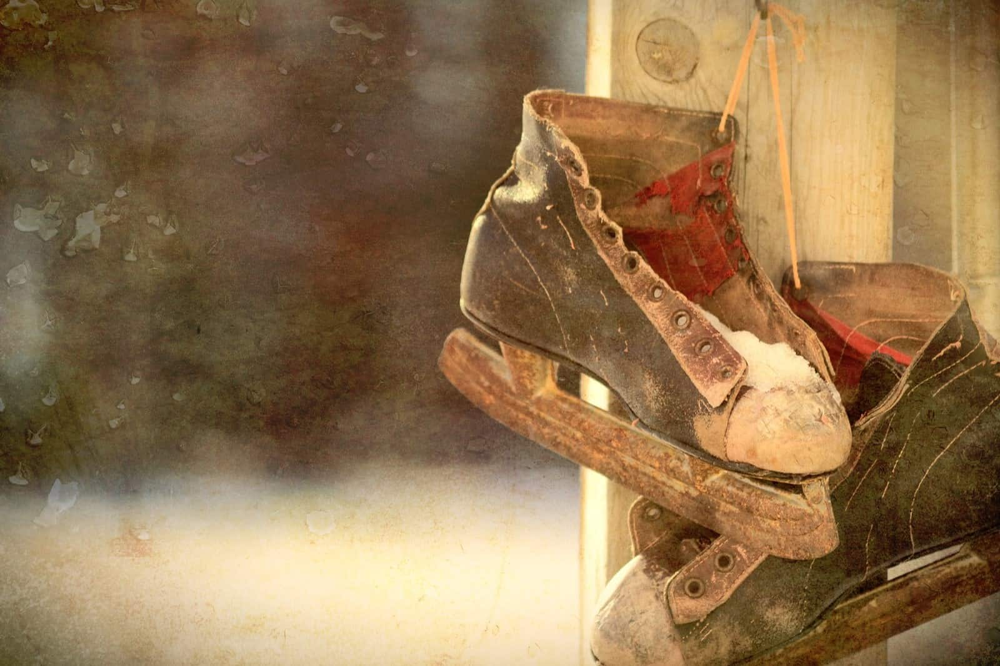

Skomakare & Skrädderi i Upplands Väsby
Välkommen till Väsby Läder & Textilspecialisten. Vi är din lokala expert på skoservice, nyckelkopiering och skrädderi i Väsby Centrum.

Din skomakare i Väsby sedan 1980
Väsby Läder- & Textilspecialisten är en anrik servicebutik belägen mitt i Upplands Väsby centrum. Vi kombinerar traditionellt hantverk med modern teknik för att erbjuda den bästa servicen för dina skor, kläder och nycklar.
Med över 40 års erfarenhet i branschen har vi kunskapen som krävs för att hantera allt från enkla lagningar till avancerad reparation av ridutrustning och exklusiva märkesväskor. Vi är stolta över att vara det självklara valet för boende i Upplands Väsby, Sollentuna och Märsta.

Våra Tjänster & Expertis

Skoservice & Klackning
Letar du efter en skomakare i Upplands Väsby? Vi utför allt inom klassisk skoservice. Vi hjälper dig med klackning, halvsulning och hellsulning av både dam- och herrskor. Vi är även experter på att töja ut stövlar, byta dragkedjor i kängor och utföra avancerade läderreparationer. Vi vårdar dina skor med premiumprodukter så att de håller i many år till.
Skrädderi & Klädvård
Behöver du en skräddare i Väsby? Vi erbjuder professionellt skrädderi för alla typer av plagg. Vi utför uppläggning av byxor och jeans, byte av blixtlås i jackor och klänningar, samt lagning av revor och hål. Oavsett om det gäller en fin kostym eller din favorittröja ser vi till att passformen blir perfekt. Vi arbetar med alla material, från finaste siden till kraftigt läder.


Nyckelservice & Bilnycklar
Vi är din lokala nyckelservice i Upplands Väsby. Vi kopierar snabbt och smidigt de flesta typer av husnycklar, tillhållarnycklar och cylinder-nycklar. Vi är även specialiserade på bilnycklar – vi kan kopiera och programmera bilnycklar med transponder och startspärr till de flesta bilmärken. Spara tid och pengar genom att kopiera din extranyckel hos oss i Väsby Centrum.
Kem- & Mattvätt
Vi erbjuder professionell kemtvätt och mattvätt i samarbete med de bästa tvätterierna. Lämna in din kostym, brudklänning eller dina skjortor för en skonsam och effektiv rengöring. Vi tar även emot alla typer av mattor, inklusive persiska mattor, ryamattor och trasmattor. Vi garanterar ett rent resultat med fokus på att bevara materialets kvalitet och lyster.


Gravering & Skyltar
Behöver du en personlig present eller en dörrskylt? Vi graverar med hög precision i material som plast, mässing, glas och aluminium. Vi har lång erfarenhet av att gravera allt från hästgrimmor och hundhalsband till champagneglas och pokaler. En graverad gåva är perfekt för dop, bröllop eller födelsedagar. Kom in till oss i Väsby för rådgivning kring din gravering.
Slipning av Knivar & Skridskor
Vässa dina verktyg hos oss! Vi erbjuder professionell slipning av köksknivar, saxar och verktyg. Under vintersäsongen är vi det självklara valet för slipning av skridskor och långfärdsskridskor i Upplands Väsby. Med rätt skärpa blir både matlagningen och skridskoåkningen roligare och säkrare. Vi ser till att dina eggar får den perfekta vinkeln för optimalt resultat.

Se hantverket i rörelse
Följ med in i vår verkstad i Upplands Väsby och se hur vi arbetar för att ge dina favoritsaker nytt liv genom skoservice och skrädderi.
Vanliga frågor
Hur lång tid tar en klackning?
Mindre arbeten som klackning kan ofta utföras snabbt, men för bästa resultat rekommenderar vi att du lämnar in skorna. Kom in till butiken i Väsby för en kostnadsfri bedömning.
Kan ni kopiera bilnycklar?
Ja, vi kan kopiera och programmera bilnycklar med transponder och startspärr till de flesta bilmärken direkt i butiken i Väsby Centrum.
Tar ni emot alla typer av mattor?
Vi tar emot nästan alla typer av mattor för kemtvätt, inklusive persiska mattor, ryamattor och orientaliska mattor. Kontakta oss om du är osäker på ditt material.
Behöver jag boka tid för skrädderi?
Nej, du är välkommen in till oss under våra öppettider för att få hjälp med ditt skrädderi eller klädvård. Vi mäter och nålar på plats.
Besök vår butik i Väsby Centrum
Dragonvägen 86 (Väsby Centrum)
194 33 Upplands Väsby
Vi servar även kunder från Sollentuna, Märsta och Rosersberg.
Mån - Fre: 10:00 - 19:00
Lör - Sön: 11:00 - 18:00